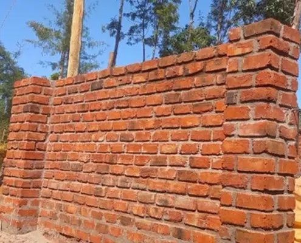
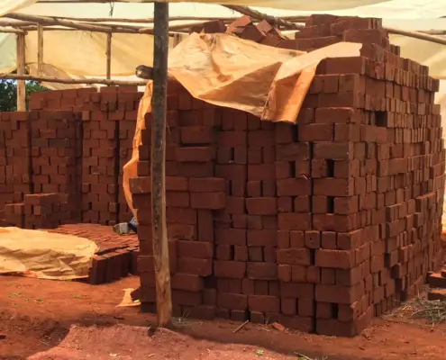
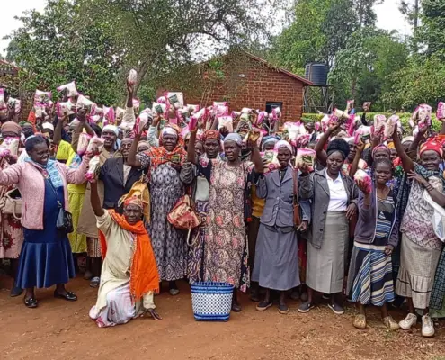
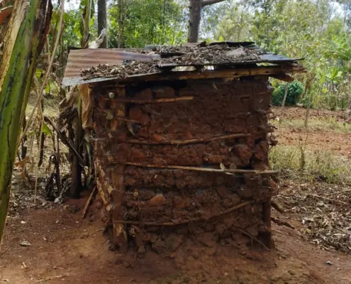
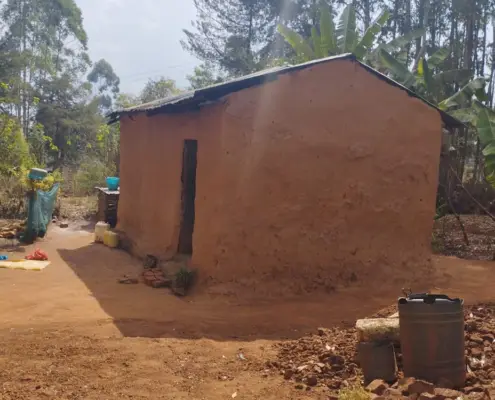
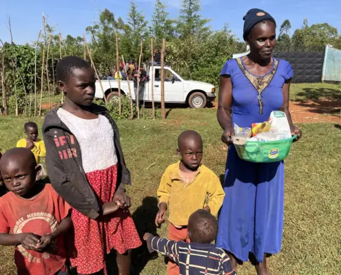
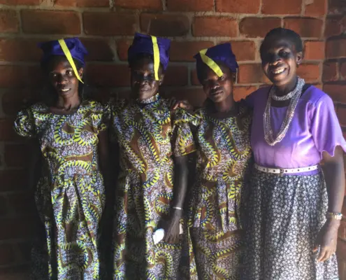
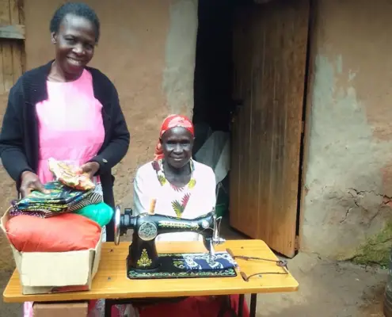

Summer of 2023
 Lani Orosco, co‑founder
Lani Orosco, co‑founderJanuary is the beginning of the school year in Kipsaina. We have 5 boys in high school right now, 2 doing internships, 3 in college, and one in University. The younger 6 are in primary school. All levels of school cost money which is a problem for most families. Primary (our elementary) is not expensive, averaging $3 to $5 per boy, per quarter, but when you have no money, the child stays home and takes care of the animals.. We help pay for many of the village kids to attend primary, sometimes up to 20, also buying their uniforms and school shoes. The school fees may seem small, but money is scarce. The majority of the village kids are raised by grandparents, and school is not a necessity to them. We have tried to change that.
High school is $100 per student, per year. College, which over here is trade school, is more expensive, $500 to $700 per year. One of our boys was accepted as a student at the University of Mombasa. Hopefully he can continue with a scholarship. Another has exceeded our expectations and has won several awards. Previous college boys have learned plumbing and electrical work. They have volunteered their skills at the home.
One of our largest projects was to put a brick fence around the entire 7 acres. We manufacture our own bricks, and several of the boys have learned how to make them, build with them, and assist in concrete work.


Feeding widows, from six different small villages, is the most rewarding moment you can find over here. We have approximately 600 that show up and those in charge of distribution , visit those too sick or old so they can be blessed also. The mamas are so appreciative and thankful, they overwhelm you with their gratitude. We visit two villages at a time, providing 2 kilos of maize flour and 2 containers of beans.

For Christmas, we added a kilo of sugar
Houses are another way to take care of the widows. Many have roofs that leak during the rainy season. And then there are those that just fall down. We build a new home next to the old one, which then becomes their cooking room.

The old house.

The new one.
This year, we built 5 houses at a cost of $900 each.
We also put 10 baskets together for the closest neighbors to the boy’s home. Isabel, the house mother, knew of those in dire need of help. Our boys assisted in the delivering of the baskets which contained maize flour, sugar, soap, matches, cooking oil, green grams, and rice.

Before leaving in October, we had our 6th tailoring school graduation. Our tailor, Rose teaches for a full year, not only instructing them in the sewing of clothes, but also as a counselor, mother and sometimes safe place to live. They are supplied a sewing machine, and upon graduation, they get to keep it. All supplies are included, fabric, thread, scissors, needles, machine oil, paper for tracing patterns, and anything else needed. These are pedal machines, no need of electricity. The cost for everything is about $250 per student.


We are still in the tea business, with over 8000 tea plants. We belong to a tea co‑op and are aiming to produce enough tea to pay for the salaries of those who work the tea fields.
A new year has arrived and we have plans for more good things. We appreciate all of you who are a part of Missions for Orphans.
Mama Lani